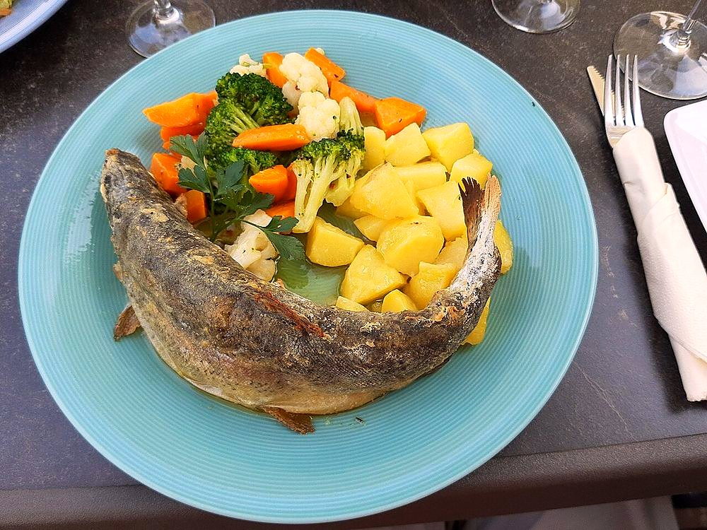

Contains: fish, mustard
Checked against the ingredient list for ten allergens: milk, egg, fish, crustaceans, tree nuts, peanuts, sesame, mustard, soy and gluten. Brands vary, so read the label on anything new to you.
Ingredients
Quantities for 2.
- 2 whole trout, about 300g each, cleaned and slashed 3 times a side Fishcatalogued simply as fish. Use trout, or any firm river fish
- 4 tbsp Mustard Oil
- 1 tsp Ajwaincarom is the hill cook's fish spice; it cuts the oiliness
- 1 tsp Turmeric
- 1 tsp Kashmiri Chillifor colour without heat
- 3/4 tsp Chilli Powder
- 1 tbsp, paste Ginger
- 1 tsp, paste Garlicoptional
- 1/2 tsp, coarsely cracked Black Pepper
- 1, half juiced and half in wedges Lemon
- 2 tbsp Rice Floura light dusting for extra crustoptional
- to taste Salt
- a small handful Coriander Leavesoptional
Cookware
stovetop, tawa
Before you start
- Pat the fish bone dry inside and out with kitchen paper. Any surface water and the marinade slides off and the skin steams instead of crisping.
- Marinate 20 minutes only. Lemon juice on a delicate river fish for longer than that starts to cure the flesh and it goes chalky.
- Bring the fish to room temperature before it hits the pan.
Method
- Mix the turmeric, kashmiri chilli, chilli powder, ajwain, black pepper, ginger, garlic, lemon juice and salt into a thick paste.
- Rub the paste over the fish and well into the slashes and the cavity. Rest 20 minutes.Push it into the cuts with your fingers. That is the only way seasoning reaches the flesh of a whole fish.
- Dust each fish lightly with rice flour on both sides and shake off the excess.
- Heat the mustard oil on a heavy tawa until it smokes, then cut the heat to medium for a minute.
- Lay the fish in away from you and fry undisturbed for 5 minutes.Do not poke it. The skin releases from the pan by itself when the crust has formed.
- Turn once with a wide spatula and fry the second side 4-5 minutes until the thickest part flakes at a fork.
- Lift onto a warm plate, rest 2 minutes, scatter coriander and serve with lemon wedges and hot rice.
Safe temperatures: Fish is done at 63°C / 145°F, or when it turns opaque and flakes easily. Reheat leftovers to 74°C / 165°F. FoodSafety.gov
Storage
Best eaten within the hour. The crust softens fast. Leftovers keep 1 day refrigerated; flake the cold flesh into a salad rather than reheating.
Nutrition Medium estimate
High protein: 32 g a serving, 26% of the calories
| Per serving212 g | Per 100 g | |
|---|---|---|
| Calories | 489 kcal | 231 kcal |
| Protein | 32.3 g | 15 g |
| Carbohydrate | 18.4 g | 9 g |
| of which sugars | 0.5 g | 0 g |
| Fibre | 2.7 g | 1 g |
| Fat | 31.8 g | 15 g |
| of which saturated | 4.0 g | 2 g |
| of which unsaturated | 24.8 g | 12 g |
Ingredients given to taste count as zero, so the real figures run a little higher. Estimated from raw ingredients using USDA FoodData Central.
Times, yields, allergens and nutrition are guidance. Use your own judgement on doneness and on storing. More in About.